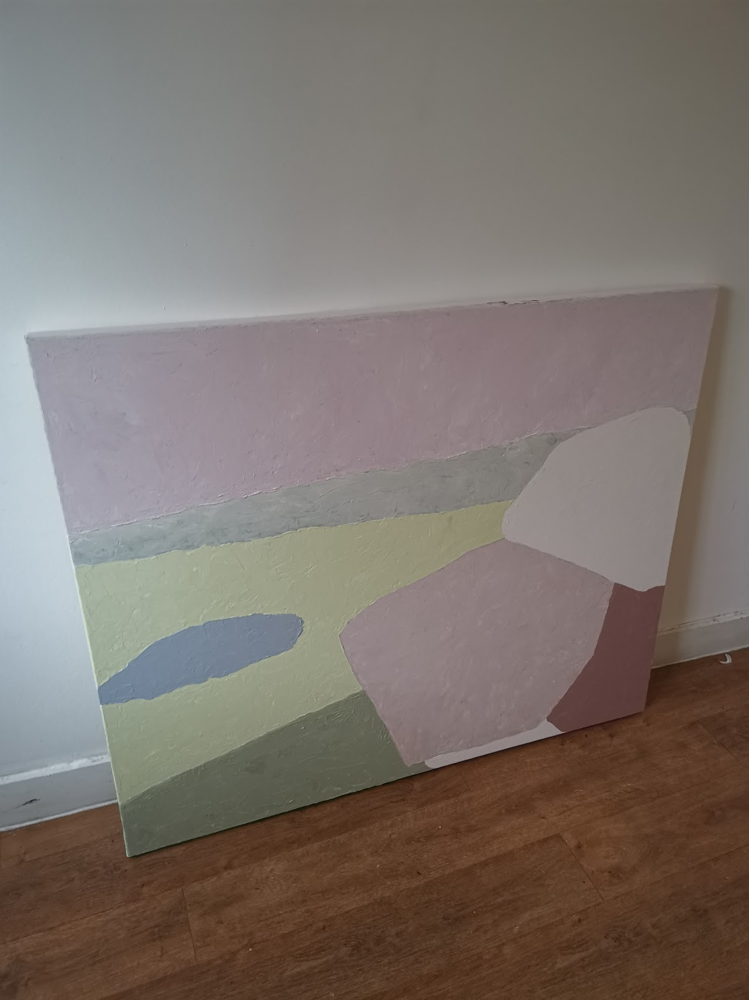
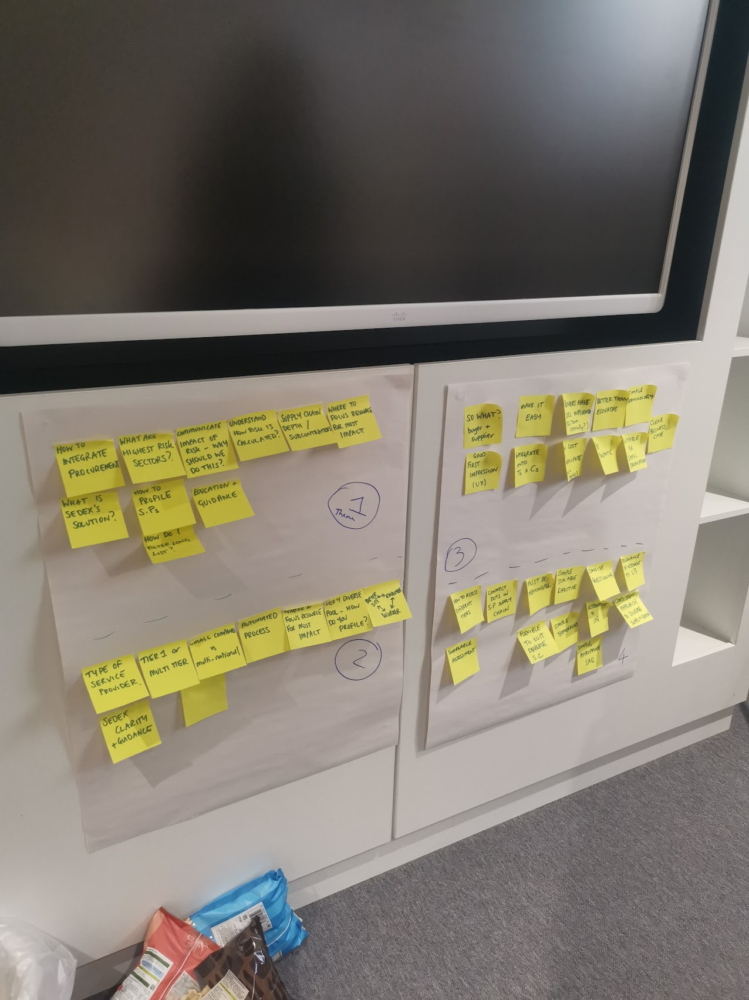
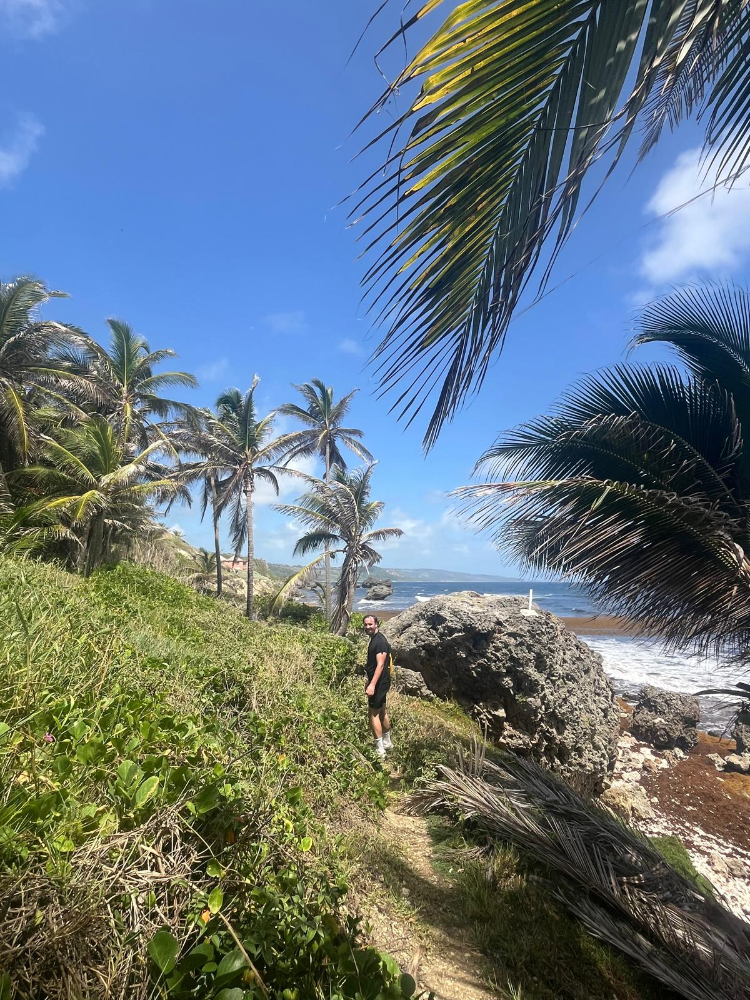
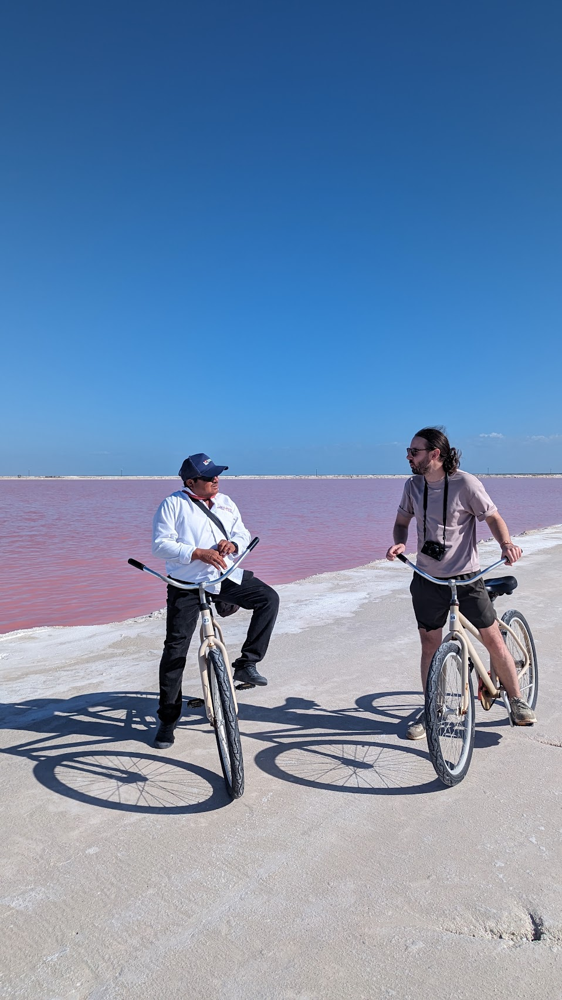
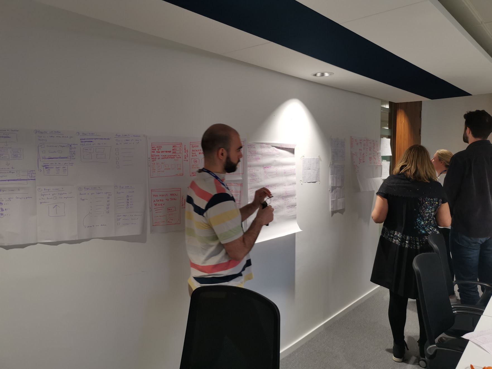
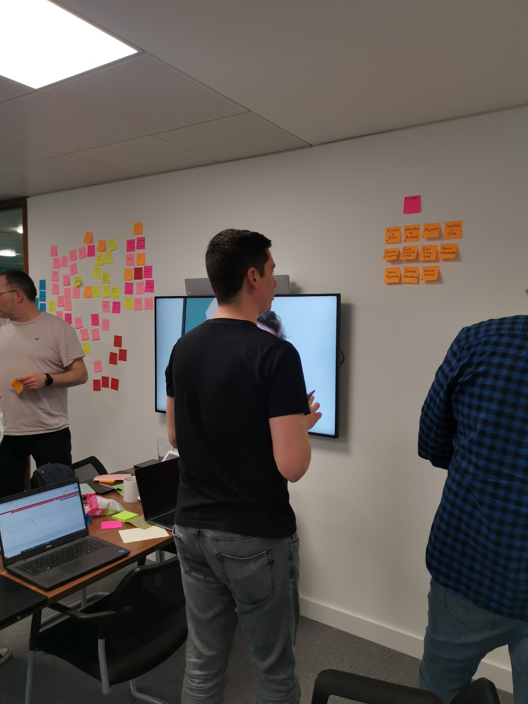
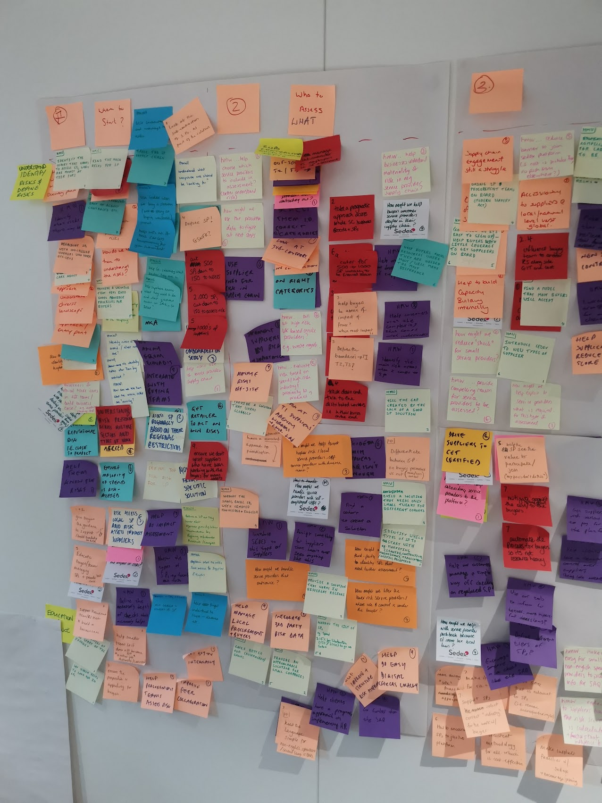
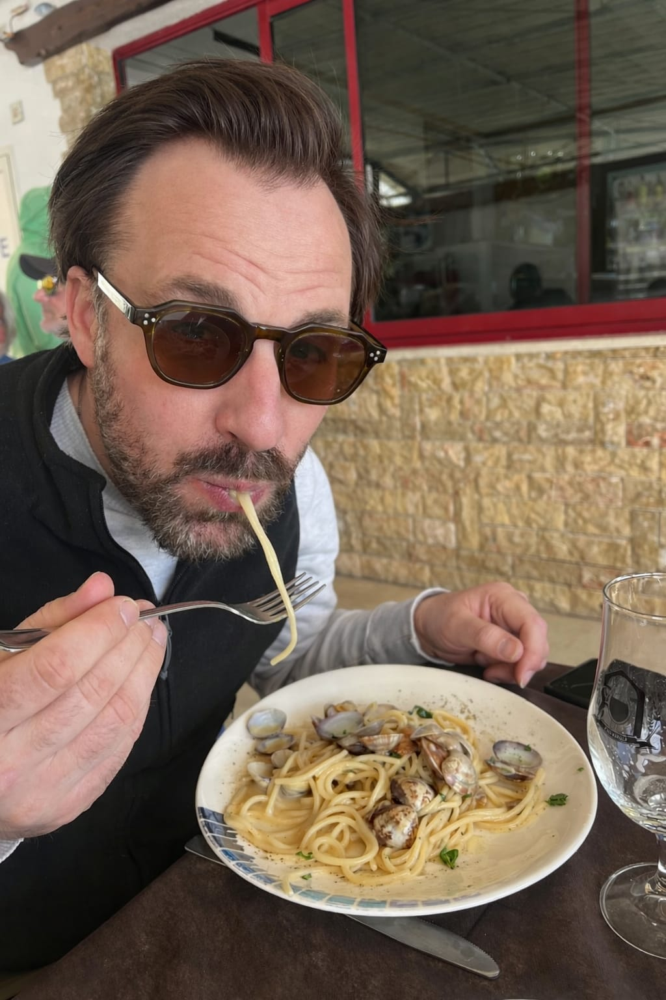
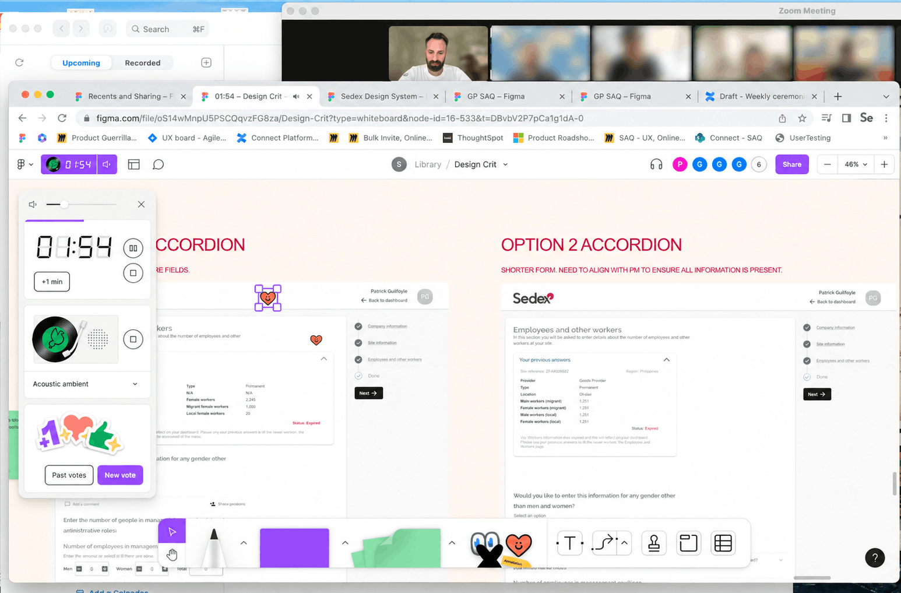

Product Design Lead with experience across fintech, sustainability, publishing, and e-commerce, having worked with teams at Intick, Sedex, The Economist, and Mr Porter. I’ve built a broad skill set in interface design, information architecture, design systems, research, and workshopping, leading projects end-to-end, collaborating closely with stakeholders, and mentoring other designers along the way.
In my spare time I enjoy film, art, travel, and exploring different cultures. Growing up in a large family, I’ve learned to thrive in social, fast-moving environments, and I bring the same curiosity, energy, and ambition to everything I do, whether experimenting with a new tool, a side project, or shaping a product from concept to delivery.
Work
and more









